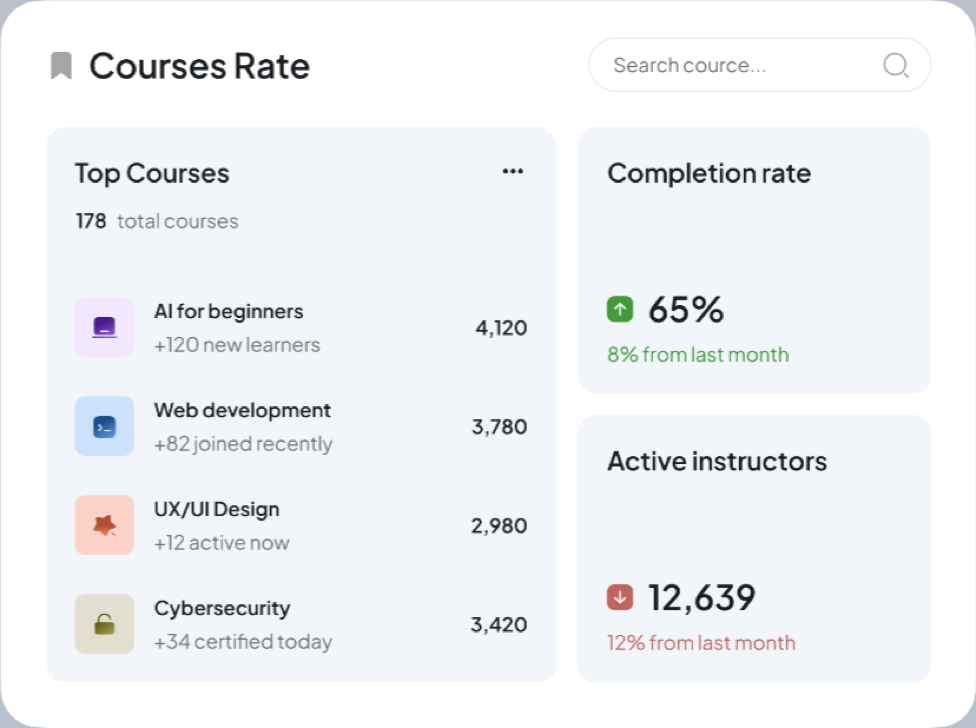
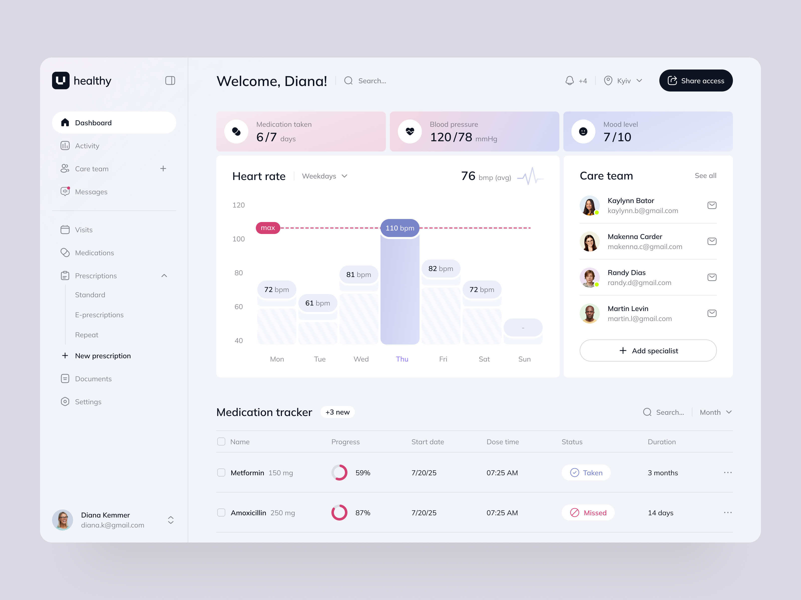

Research and feedback pile up faster than anyone can synthesize them
Our process
A design process built around decisions.
Every cycle moves a clear question to a buildable answer. AI accelerates the work around each decision; designers make every call. This page shows the full method.


What is an AI-augmented design process?
An AI-augmented design process is a workflow where senior designers use AI at every production stage — research synthesis, exploration, prototyping, and design-system upkeep.
AI accelerates production work; designers own judgment, quality, and every final decision.
What we solve
Where product design slows down
Once a product is live, most delays don’t come from the design itself. They come from the work around it.
Teams commit to the first idea that works, instead of the best of several
Prototypes take too long, so validation happens after the build, not before
The design system drifts as new features pile on
Handoff is incomplete, so engineering fills in open questions
A strong design capacity means maintaining momentum
Four stages, one rule: AI accelerates the work around each decision — the decision stays human.
We define the decision that matters most and use AI to collect, sort, and make the inputs usable.
How we do it
Grow your roadmap, not your design overhead
AILUME uses AI to remove drag from the design process, so experienced designers explore more, decide faster, and keep systems moving.
-
01
Research & synthesis
Large inputs turn into patterns, risks, opportunities, and product signals.
-
02
Exploration
Generative AI helps test more directions while designers keep product judgment intact.
-
03
Prototyping
A promising concept becomes something teams can click, test, and discuss earlier.
-
04
Interface content
Language moves in step with UX logic and real edge-case states.
-
05
Design system
AI helps maintain components, documentation, states, and patterns.
AI-assisted
AI assists. People decide.
- Organize research
- Compare patterns
- Generate ideas faster
- Draft content
- Assemble prototypes
- Document decisions
- The problem
- Product judgment
- Visual quality
- User context
- The recommendation
- Final decisions
How we scale
Grow your roadmap, not your design overhead
AILUME uses AI to remove drag from the design process, so experienced designers explore more, decide faster, and keep systems moving.

Core team
Design Partner
Senior Product Designer
Product Prototyper
Centralized direction, open decisions, and reusable references.
Work moves in compact cycles, not vague handoff queues.
Decisions are documented before they become implementation questions.
Definition of done
A finished screen is not a finished design
Before work is ready for engineering, we confirm that:
The primary user flow is complete
Key states and edge cases are covered
Interactions and behavior are clear
Interface content is included
Components and patterns are mapped
Responsive behavior is addressed
Engineering reviewed the proposed solution
Decisions and assumptions captured
Our standards
The standards behind the work
More business and screens shipped faster
The design system stays consistent as you grow
Cleaner handoff and fewer engineering stalls
FAQ
What clients ask us most
What AI tools do you use?
We use AI across research synthesis, content drafts, prototyping support, and documentation, while senior designers own every decision.
How long does a typical design cycle take?
Most cycles run in compact weekly loops, with scope adjusted around the decisions your team needs next.
Does AI replace your designers?
No. AI removes production drag; designers remain accountable for judgment, quality, and recommendation.
Does AI make the design decisions?
No. AI can surface options and patterns, but a senior designer makes the final call.
How is this faster than a traditional process?
We compress research synthesis, exploration, prototyping, and documentation around tighter decision loops.
What does a one-ready handoff include?
Clear flows, states, behavior, responsive rules, component notes, and implementation context.